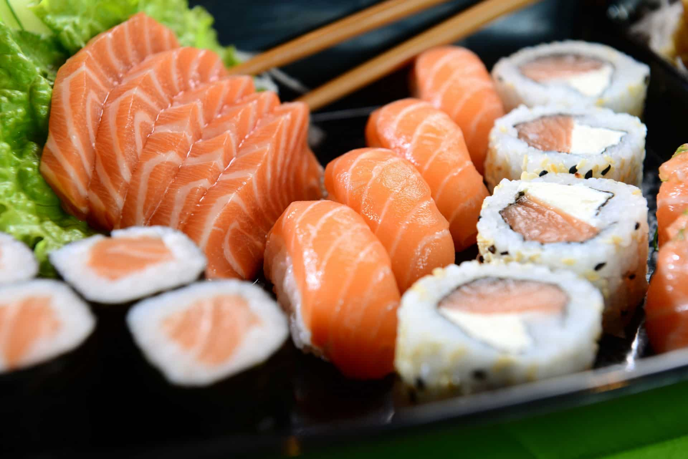

Comida Oriental
A culinária Japonesa é bastante equilibrada, sendo muito rica em peixes (ômega 3), vegetais, massas e ingredientes frescos.

A culinária Japonesa é bastante equilibrada, sendo muito rica em peixes (ômega 3), vegetais, massas e ingredientes frescos.
A culinária Japonesa é bastante equilibrada, sendo muito rica em peixes (ômega 3), vegetais, massas e ingredientes frescos.
Tempura
Gunka Sushi
Teppan